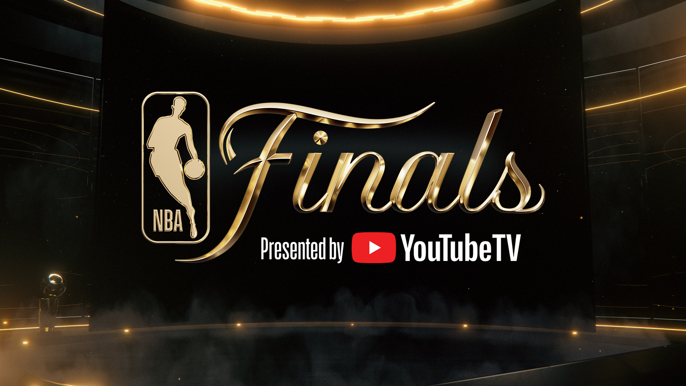
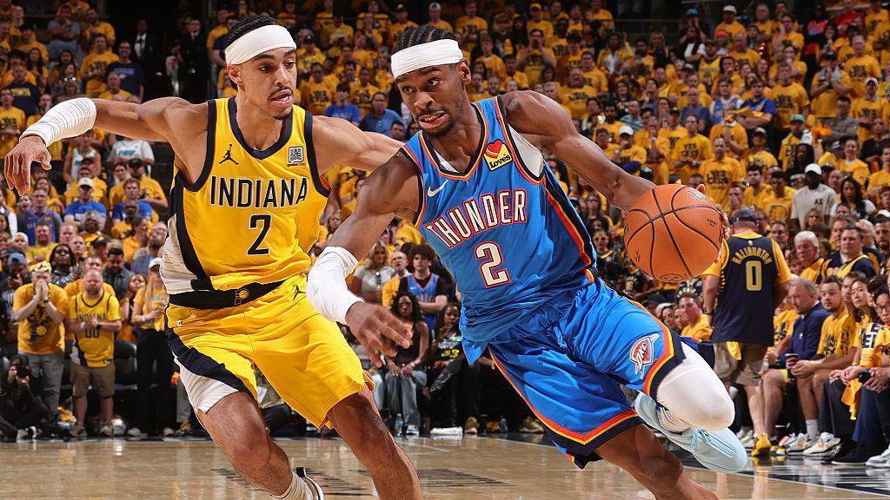
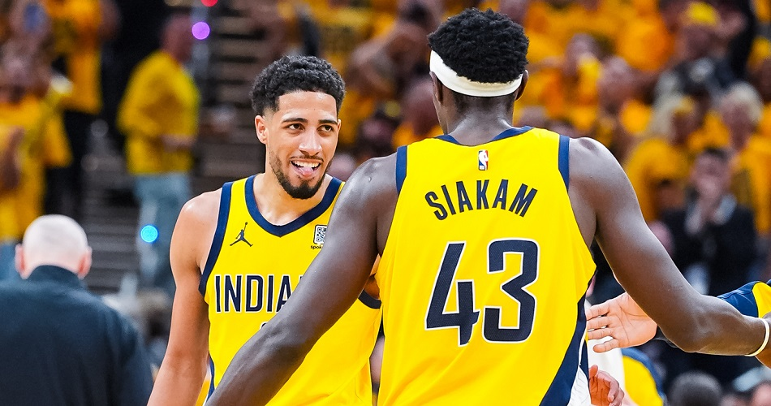

NBA Finals Game 7 Preview
by Tim Mailhoit, June 20th, 2025
Every NBA playoff series at some point becomes an object lesson, a teachable moment, a chance to ask players, coaches , and sometimes ourselves to look inward and ask, with a practiced earnestness, What have you learned? The answer might be about the strength of the opponent. Or the difficulty of closing out a series. Or the importance of preparation, of film study, of good work habits, of attention to detail. You win, you learn. You lose, you learn. More games just mean more lessons, more introspection, more discovery. So here, dear NBA fans, is what we have now learned, through six games of a taut 2025 NBA Finals between the Oklahoma City Thunder and Indiana Pacers, a series that will now go to a seventh game thanks to an unfathomable 108-91 rout by the Pacers on Thursday night: Nothing means anything. Regular-season records? Meaningless. Odds and predictions? Oddly meaningless. Fancy advanced stats and data visualizations? Fancy and meaningless. MVP trophies? Shiny and meaningless. A serious leg injury that reportedly should have sidelined the Pacers’ best player? Apparently, not serious enough to matter. The Thunder seemingly had everything going for them heading into these Finals—the talent, the depth, the defense, the gaudy win total (68), the Most Valuable Player (Shai Gilgeous-Alexander), even the longer rest before the series (eight days, compared to five for the Pacers). Oklahoma had been favored to win the West since the preseason, while the Pacers were favored to make the play-in tournament.
And on Sunday, they will both play 48 minutes (or, who knows , maybe 53!) to decide who claims the Larry O’Brien Trophy. Because nothing means anything in the NBA of 2025. And this is a beautiful, glorious thing if you’re a fan of the game writ large (and not, say, a fan specifically of the Thunder, who surely expected to be cradling good ol’ Larry by now). If the great allure of sports is the drama, the suspense, and the wonder of what happens next, these Finals have overdelivered beyond all possible expectations. The Thunder had Game 1 in the bag … until Tyrese Haliburton hit that deep jumper with three-tenths of a second left. The Thunder still seemed poised to control the series … until the Pacers roughed them up in Game 3. And after the Thunder handily took Games 4 (in Indiana) and 5 (in Oklahoma), they absolutely seemed primed to take the title in Game 6, especially given the doubts about Haliburton, who was dealing with a strained calf that, according to reports, would have kept him out of a less critical game. And then the Pacers thoroughly, shockingly obliterated them anyway, leading by as many as 31, with Haliburton at the front of the pack.
Maybe the lesson here is that the youthful Thunder—who just won their first playoff series together a year ago—still have lessons to learn about poise and focus and effort in a game of such gravity. But then, the Pacers are pretty young as well. The lessons should be offsetting. So maybe the lesson is simply that, in this NBA age of profound parity, the talent differential between any two playoff teams is not necessarily as great as the stats and win-loss records would imply. That objects in the mirror are closer than they appear. And in this case, that the Pacers, despite 18 fewer wins in the regular season, one fewer MVP , and way fewer accolades, are perhaps closer to the Thunder than anyone could have surmised when this series began 15 days ago. Or perhaps the weight of winning the championship was simply too great for a team still learning the lessons of June. “Definitely in the back of our minds, for sure,” Gilgeous-Alexander conceded after the Game 6 loss. “Now, we didn’t play like it at all. That’s why the night went the way it did. We got exactly what we deserved.”
Gilgeous-Alexander has been just as sleek and crafty as expected in these Finals, but also more error prone in critical moments, including a 21-point, eight-turnover performance in Game 6. Haliburton can’t match SGA’s stats or skills, but he has matched his overall impact and his win total. Jalen Williams is a more potent and creative scorer than Pascal Siakam, but it’s Siakam who has been more efficient in this series. For every Chet Holmgren highlight for the Thunder, the Pacers have countered with a T.J. McConnell burst. For every Lu Dort explosion, Indiana has countered with a Bennedict Mathurin moment. All told, OKC leads the Pacers by just seven total points across six games—enough to underscore the Thunder’s perceived superiority, but not enough to decide the championship after two weeks of basketball. “It’s special now, to be creating our own run,” Haliburton said. “It’s a lot of fun, and obviously to win a championship would mean the world to me. But we’re not there yet.”
So we go to a Game 7, where the Thunder will look to finally validate eight months of dominance and the Pacers will look to complete one of the great upsets in NBA Finals history. The last team to win the championship with 50 wins or fewer (in an 82-game regular season) was the 1994-95 Houston Rockets, who’d won 47. But then again, this entire postseason has been a testament to the Pacers’ uncanny resolve, their ability to wipe out 20-point deficits, to meet every moment, to hit every clutch shot, to defy expectations again and again and again. The Pacers weren’t supposed to be here—not in the Eastern Conference finals or the NBA Finals, and definitely not a decisive Game 7. But a Game 7 there will be, Sunday night in Oklahoma City, where the Thunder will surely be favored once more, the Pacers will try to defy expectations once more, and the rest of us will relish the tension and the fireworks once more, until a champion is finally crowned. “One game for everything you ever dreamed of,” Gilgeous-Alexander said. “If you win it, you get everything. If you lose it, you get nothing. It’s that simple.” Someone will at long last raise the Larry O’Brien Trophy on Sunday night, but there’s no guarantee what lessons will be learned, save one: In the NBA Finals, suspense is better than certainty. No one foresaw a Finals like this. And that’s a damn good thing.End of article
Potential Finals MVP
The 2025 NBA Finals are going the distance, and the NBA Finals MVP market is as close as it's been all series long ahead of Sunday’s Game 7. Shai Gilgeous-Alexander remains the favorite to win the award at -220, but the Oklahoma City Thunder’s loss in Game 6 to the Indiana Pacers has shifted the series odds from OKC -1600 to OKC -325.So, Shai has come crashing down in terms of his lead in this market, and there are four players at 12/1 or less that can win this award, including Pacers forward Pascal Siakam, who skyrocketed to the No. 2 choice in the market after Game 6.
While oddsmakers seem to think that SGA still should win this award – if OKC wins Game 7 – it’s hard not to see some value in Siakam and Haliburton in this market. The Pacers already have 10 outright wins as underdogs this postseason, and Siakam has been the driving force for Indiana as of late with Haliburton hampered by a calf injury. While I think there is some value in Haliburton, it’s worth noting that Siakam was north of 10/1 prior to Game 6 before coming down to +390 after the Pacers picked up a win.
Siakam is averaging 19.8 points, 8.3 rebounds, 4.0 assists and 1.7 steals per game in the Finals, and while he hasn’t had any dominant scoring games, he’s been by far the most consistent player for the Pacers. After winning Eastern Conference Finals MVP, Siakam has a real case to win Finals MVP as well, and he could be worth a shot at +390 for bettors that believe the Pacers have one more upset in them. On the Thunder side, there certainly is some value in Jalen Williams (+1000) to win Finals MVP. Williams had a 40-point game in Game 5, and he’s arguably outplayed SGA in multiple games in this series.
If Williams has the signature performance in Game 7, it could swing this market in his favor, and 10/1 is a pretty juicy price to get him at. The Thunder are still heavily favored to win this series in Game 7, but it’s clear that the Finals MVP market is adjusting in case the Pacers do win. Prior to Game 6, SGA and Williams were the two favorites in this market with no other player set at shorter than 10/1 odds.